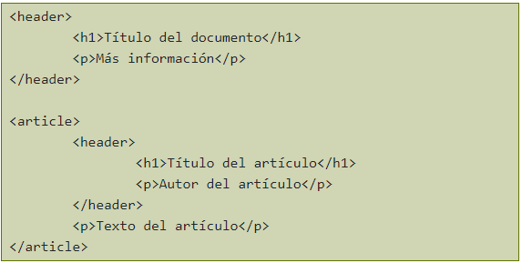
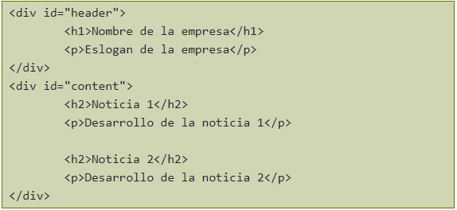

ETIQUETAS SEMANTICAS
En este artículo vamos a ver las etiquetas semánticas de HTML5, como HEADER, HGROUP, ARTICLE, SECTION, ASIDE, NAV, FOOTER.
Lo primero que conviene remarcar es que HTML5 no es un lenguaje nuevo en contraposición a HTML, sino una nueva versión del mismo lenguaje.
También hay que recordar que HTML5 incorpora cambios en profundidad que los navegadores antiguos no son capaces de mostrar, por lo tanto que hay que tener actualizado el navegador.
Las etiquetas semánticas ayudan a definir la estructura del documento y permiten que las páginas web sean mejor indexadas por los buscadores.
Una etiqueta se califica como semántica si tiene que ver el significado, es decir, si nos informa sobre lo que trata su contenido. Por ejemplo, la etiqueta SECTION nos dice que contiene una sección o capítulo dentro de la página. Frente a las etiquetas semánticas tenemos otros tipos de etiquetas como las que afectan al formato, como UL, a multimedia, como VIDEO, etc.
< HEADER >
La etiqueta < header > se usa para marcar un grupo de elementos de introducción o de navegación dentro de una sección o documento. Normalmente se usa para incluir los encabezados ( < h1 > < h6 > o < hgroup > ) pero no es obligatorio. También puede contener otras cosas como el índice de una sección, un formulario de búsqueda, logos relevantes. El uso de la etiqueta < header > no está restringido a una por documento, sino que se puede usar una por cada sección de este, de esta forma:

Podemos ver además en el ejemplo que en HTML5 el uso de múltiples < h1 > es válido. Una cosa a tener en cuenta es que la etiqueta < header > se usa para marcar un grupo de elementos; es decir, si sólo tenemos un elemento no es necesario usar esta etiqueta.
< HGROUP >
La etiqueta < hgroup > se usa para agrupar un conjunto de uno o más elementos de encabezado ( < h1 > < h6 > ). El uso más típico de esta etiqueta es para agrupar el título de la página con su eslogan. Antes de HTML5 lo más típico era que este tipo de estructura se marcase así:

Este tipo de estructura dejaba el eslogan al nivel de cualquier otro texto de la web, cuando es evidente que es un texto más importante. Marcarlo con un < h2 > no era correcto ya que crearía una nueva sección que en realidad no existe. Con HTML5 podemos usar < hgroup > para darle la importancia que realmente tiene, asociándolo al título.
< NAV >
La etiqueta < nav > se usa para marcar una sección del documento cuya función es la navegación por la página web. Esta etiqueta no debe ser usada para marcar todos los grupos de enlaces, únicamente los bloques principales de navegación por la página. Por ejemplo, los típicos enlaces que hay en el pie de página no se deben marcar con < nav >.< ARTICLE >
La etiqueta < article > se usa para marcar contenido independiente que tendría sentido fuera del contexto de la página actual y que podría sindicarse, por ejemplo: una noticia, un artículo en un blog o un comentario. Normalmente un < article > tendrá, además de su propio contenido, también una cabecera (a menudo con < header >) y posiblemente un pie ( < footer > ).< SECTION >
La etiqueta < section > se usa para marcar una sección genérica de un documento o aplicación. Una sección, en este contexto, es una agrupación temática del contenido, típicamente con un encabezado.
Ejemplos de uso de < section > podrían ser: capítulos, las pestañas en un menú tabulado o, en la página principal de un sitio web, la introducción, lista de noticias e información de contacto. Sólo se debería usar < section > para contenido independiente al que se podría poner un encabezado y que no sea susceptible de ir marcado con < article >, < aside > o < nav >.
Existe cierta confusión sobre cuándo usar < article > y cuándo < section > ya que ambos se parecen bastante. En general, se debe usar < article > cuando el contenido sea susceptible de ser sindicado (por ejemplo en unas RSS). Un ejemplo de uso de las dos etiquetas podría ser en la página principal de una web con un listado de noticias, de esta forma: